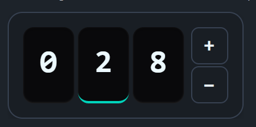

> Added in v1.7.1
DaisyNumberFlow is a numeric display control that animates individual digits scrolling vertically when values change. This creates a smooth, high-quality transition effect similar to physical counters or modern web dashboards.
C2, P0, N0) and cultures.LargeDisplay* tokens for consistent sizing across dashboard controls.<!-- Basic usage -->
<controls:DaisyNumberFlow Value="123" />
<!-- Currency formatting -->
<controls:DaisyNumberFlow Value="19.99" FormatString="C2" />
<!-- Percentage with custom easing and duration -->
<controls:DaisyNumberFlow Value="0.75"
FormatString="P0"
Duration="0:0:1"
Easing="BounceEaseOut" />
<!-- With prefix and suffix -->
<controls:DaisyNumberFlow Value="42" Prefix="Score: " Suffix=" pts" />
<!-- Dashboard-style counter with digit boxes and +/- buttons -->
<controls:DaisyNumberFlow Value="0"
FormatString="000"
ShowDigitBoxes="True"
ShowControls="True"
Minimum="0"
Maximum="999" />
<!-- Interactive counter with digit selection (tap any digit to control it) -->
<controls:DaisyNumberFlow Value="28"
FormatString="000"
ShowDigitBoxes="True"
ShowControls="True"
AllowDigitSelection="True"
Minimum="0"
Maximum="999" />When ShowControls="True", the control displays increment/decrement buttons:
| Property | Type | Default | Description |
|---|---|---|---|
ShowControls |
bool | False | Shows +/- buttons beside the digits |
Minimum |
decimal? | null | Lower bound for Value |
Maximum |
decimal? | null | Upper bound for Value |
Step |
decimal | 1 | Amount to increment/decrement per button click |
RepeatInterval |
TimeSpan | 200ms | Interval for repeat firing when button is held (should be >= Duration) |
RepeatDelay |
TimeSpan | 400ms | Initial delay before repeat starts |
WrapAround |
bool | False | When true, value wraps from Max→Min or Min→Max |
The buttons fire on pointer-pressed (not release) for immediate responsiveness and support repeat-click when held down. They automatically disable when Value reaches the Minimum or Maximum (unless WrapAround is enabled).
Enable digit selection for fine-grained control over individual digits:
| Property | Type | Default | Description |
|---|---|---|---|
AllowDigitSelection |
bool | False | Enable tapping digits to select which one to control |
SelectedDigitIndex |
int? | null | Currently selected digit (0 = rightmost/ones place) |
When AllowDigitSelection="True":
When AllowDigitSelection="True", full keyboard navigation is available:
| Key | Action |
|---|---|
| Tab | Focus the control (auto-selects rightmost digit) |
| Shift+Tab | Navigate between control and +/- buttons |
| Arrow Left | Select higher digit (tens → hundreds) |
| Arrow Right | Select lower digit (hundreds → tens) |
| Arrow Up | Increment the selected digit |
| Arrow Down | Decrement the selected digit |
| 0-9 | Directly set the selected digit to that value (with animation) |
| Space / Enter | Trigger focused +/- button |
The control shows an accent border when focused via keyboard (:focus-visible). The selected digit shows an accent-colored bottom border.
<!-- Interactive digit-by-digit counter with wrap-around -->
<controls:DaisyNumberFlow Value="0"
FormatString="000"
ShowDigitBoxes="True"
ShowControls="True"
AllowDigitSelection="True"
WrapAround="True"
Minimum="0"
Maximum="999" />| Property | Type | Default | Description |
|---|---|---|---|
ShowDigitBoxes |
bool | False | Displays styled boxes behind each digit |
When ShowDigitBoxes="True", each digit gets a rounded box with an inset shadow, creating a dashboard/counter aesthetic similar to SmoothUI's NumberFlow component.
DaisyNumberFlow uses the LargeDisplay* design tokens for consistent sizing:
| Token | Default | Description |
|---|---|---|
LargeDisplayFontSize |
36 | Default font size for digits |
LargeDisplayElementHeight |
86 | Height of each digit box |
LargeDisplayElementWidth |
58 | Width of each digit box |
LargeDisplayElementCornerRadius |
12 | Corner radius for digit boxes |
LargeDisplayElementSpacing |
4 | Gap between digit boxes |
LargeDisplayButtonSize |
42 | Size of +/- buttons |
LargeDisplayButtonFontSize |
20 | Font size for +/- symbols |
LargeDisplayButtonCornerRadius |
8 | Corner radius for buttons |
LargeDisplayContainerPadding |
16 | Padding inside outer container |
LargeDisplayContainerCornerRadius |
16 | Corner radius of container |
Override these in your App.xaml to customize all large display controls:
<Application.Resources>
<sys:Double x:Key="LargeDisplayFontSize">48</sys:Double>
<sys:Double x:Key="LargeDisplayElementHeight">100</sys:Double>
</Application.Resources>DaisyNumberFlow for prominent numeric displays like prices, scores, or sensor readings.DaisyNumericUpDown.FormatString that matches your data type (e.g., "N0" for integers, "N2" for decimals).ShowDigitBoxes="True" ShowControls="True" for interactive dashboard counters.FontSize defaults to the LargeDisplayFontSize token (36px) but can be overridden directly.